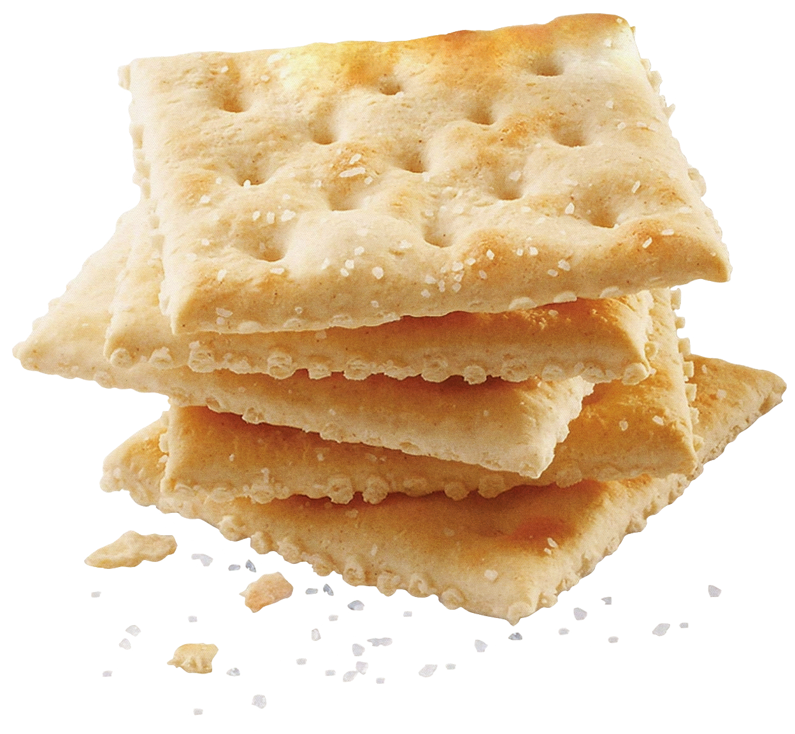
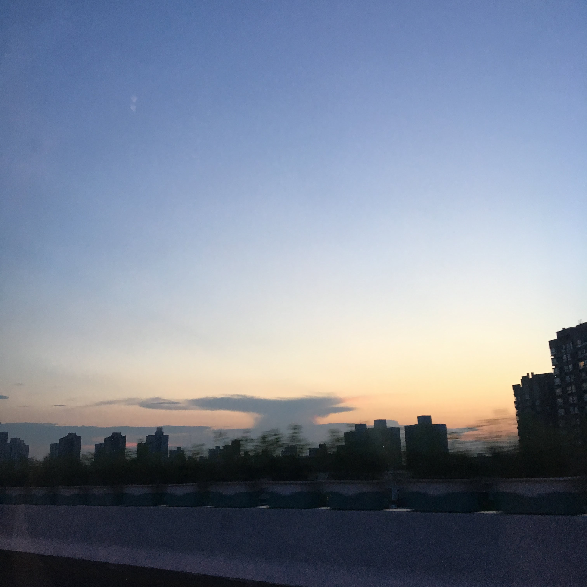
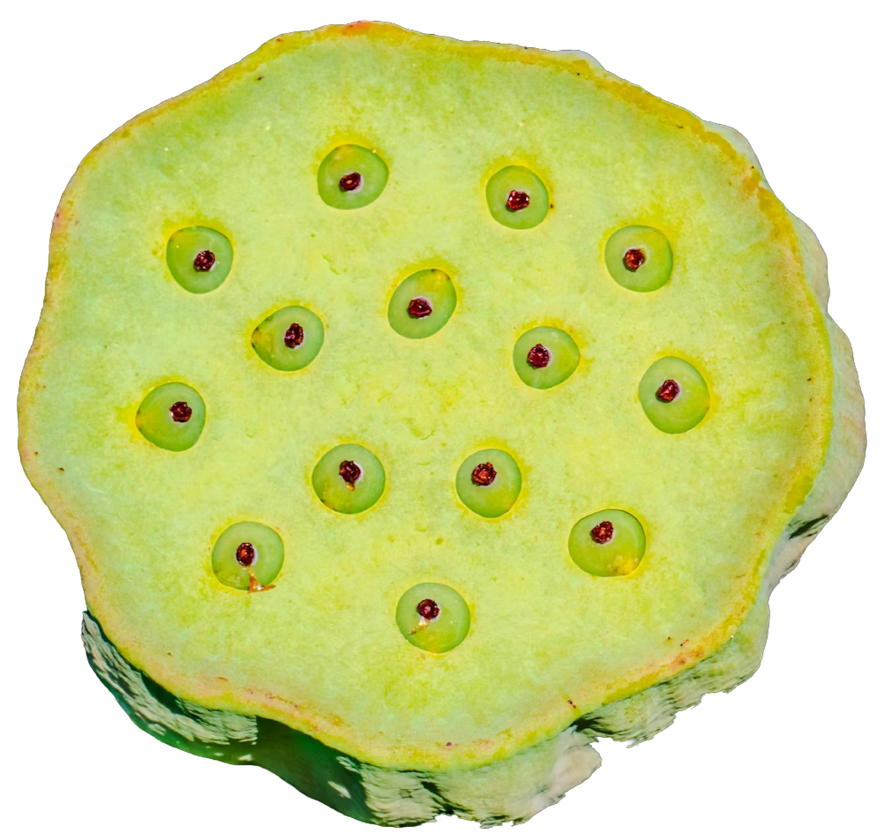
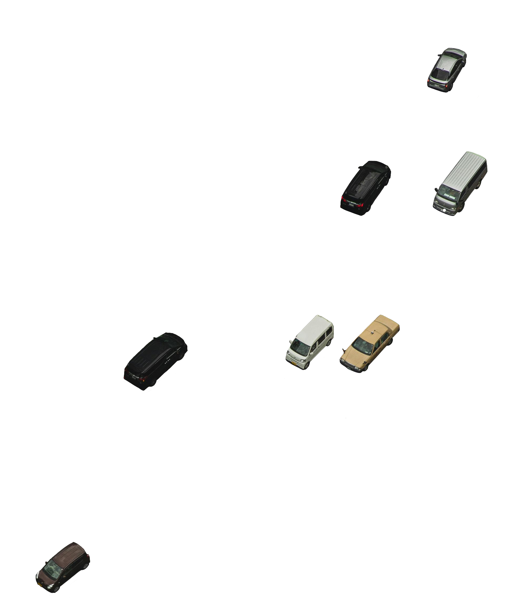
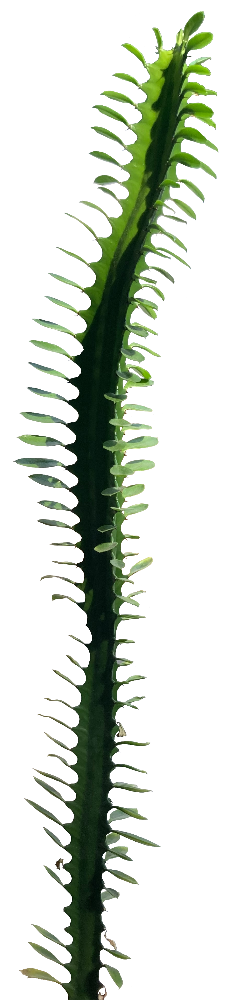

我奶奶的名字叫王天兰.
“天” 就像 “天空” 的 ”天“
我是中间那个宝宝!

I haven’t lived with my grandma before, not long-term. Thinking back now, there may have been some years in Omaha when she had a home not far from ours. If this is a memory and not a fabrication, I must have been very young. For most of my life, she lived in China while I was in the states. This meant I saw her very little, when she came to stay with us or we were in Shanghai to see her. It is this way, still, only she does not come to the states and hasn’t for perhaps fifteen years. Time together is precious and scarce; intermittent, memories with her are markers of points in my life.

I love my grandma. I’ve always been very attached to her despite our language barrier; since I can remember, I cry each time we had to say goodbye up til I last saw her. There’s a grief that continues to grow with years apart, one which remembering softens so I may push towards the future. We talked recently about nostalgia for the past and hope for a time ahead, one when we can live together again.
这张照片摄于2019年，那是我上一次去上海的时候。
和 “兰花” 的 “兰”
我以前一直以为它是“Lan”——就像那个表示“蓝色”的词一样——因为两者的发音很相似。
我真想她啊!
这是一个由回忆构成的网站。
By the time I was in high school I had decided I’d live with my grandma in Shanghai someday, when I was older. It was a certainty to me, one that I still believe in, one that becomes more real as graduation approaches. This memory box is a meditation on our days together over the years, a practice in remembering and dreaming of the future. Exploration is encouraged—click (everywhere) and (sometimes) drag items as you wish!





